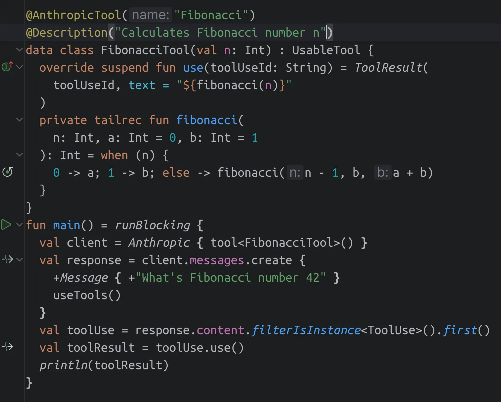

I have a pleasure to invite you to the workshop Agentic AI for Artists
, on the 26th of October 2024 (Saturday),
at Prachtsaal (Berlin Neukölln). The workshop will be conducted by me
(Kazik Pogoda), with support from Julia Thomas, mothers of xemantic, a collective of applied
philosophy.
We believe that coding AI agents should be as easy as possible. In the Creative Code Berlin community, we are teaching artists, often without prior programming experience, how to express their creations through code as a medium. For this purpose we use creative coding environments like Processing, p5.js, or OPENRNDR. I developed a set of AI assistants and development tools intended to be equally accessible, so that creators of all kinds can turn their own machines into an outside window, through which, the AI system can perceive our world, values and needs, and act upon this information.

If you want to participate in this workshop, but the date does not fit you, please write to . We will inform you about upcoming editions.
Direct questions related to the workshop can be asked on xemantic discord server.
During the workshop you will learn:
A limited number of reduced-priceSolidaritytickets are available for those who would otherwise find the regular price a barrier to participation. No questions asked.
All prices include 19% VAT. Members of Prachtsaal cooperative can participate in the workshop for free.
If you are interested in the workshop, please send email to containing Information which ticket you choose + data for issuing an invoice:
Please make sure to read this page fully for further details.
The programming knowledge is not absolutely necessary to participate in this workshop, especially the first part introducing tools and the theory, however rudimentary coding skills can be useful in general.
The experience with conversational AI is not required, but helpful. People interested in learning or refreshing knowledge and vocabulary related to this part, are strongly advised to come to the workshop starting from 10:00. If you feel familiar with the topic, then it is OK to come at 11:00.
You should bring your computer. Only Linux and macOS were tested with Claudine. Integration with Windows PowerShell should be easy, however I don't have a Windows machine around to try it out. If you need to use Windows, please contact me before the workshop, and maybe we can develop a solution together. Windows should be still good to use other artistic AI agents presented during the workshop.
We will help you set up everything during the workshop, however we are going to use Anthropic API directly, and it's a paid service. You should preferably purchase API tokens before the workshop, and the minimal amount is $5, which should be more than sufficient for the workshop. Note: API use tokens are a different product than conversational Claude AI interface.
Note: this is the first workshop of this kind we are preparing, therefore we are still figuring out what works and what does not work in such a formula. The agenda is more informational than strict, but it covers the overall plan.
flavorsof Claude, and also achieve much more thanks to use of tools, which we are going to explore during the workshop.
The artwork used as a background of this page is a variation of Generative Art Deco 4 by Kazik Pogoda. It is powered by the shader-web-background library.